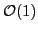
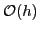

In this study an OcTree discretization for Maxwell’s equations is proposed. This discretization is based on an explicit construction of the adjoint of the curl operator. As opposed to the  local accuracy offered by the transposed curl operator, this non-symmetric construction offers local accuracy of , which is more favorable. We explore several adaptive refinement criteria, and discuss their effectiveness.